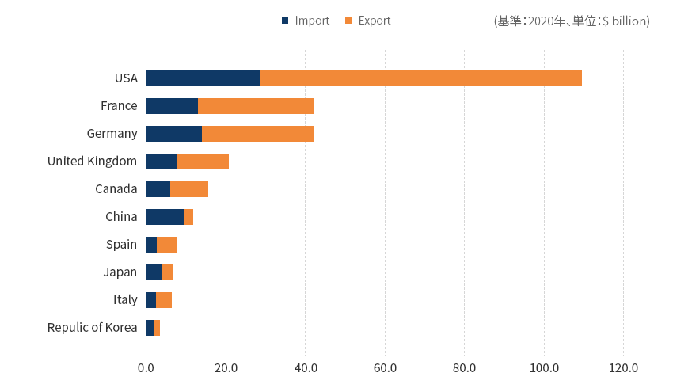
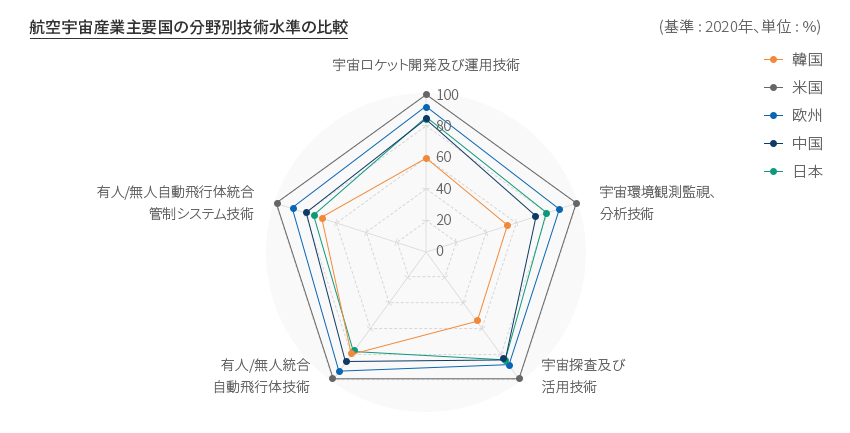
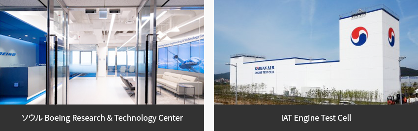
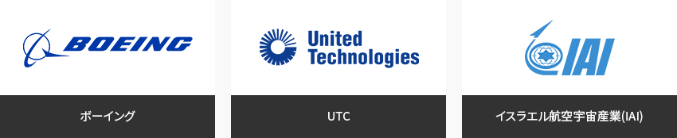
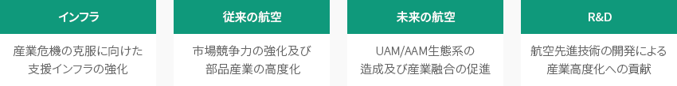
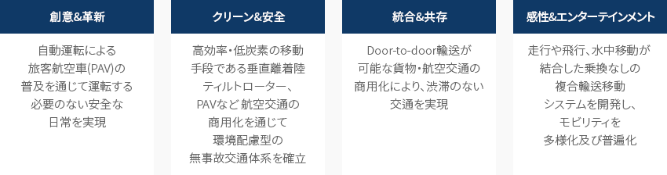
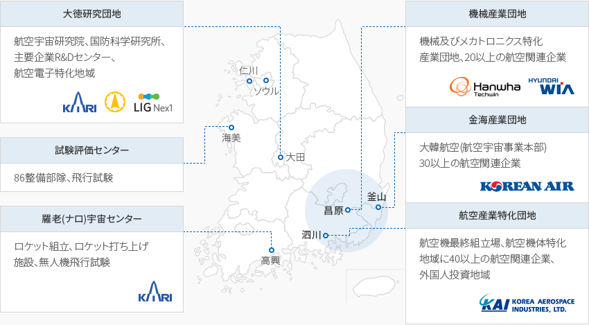
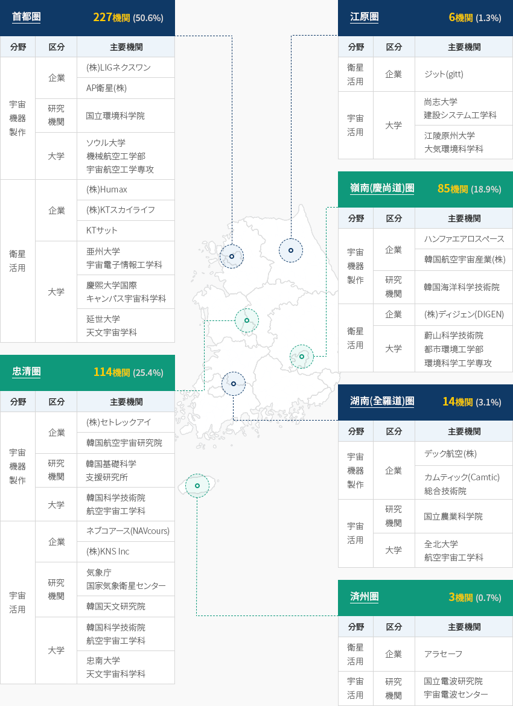

航空宇宙
- Home
- Why KOREA
- 産業
- 航空宇宙
航空宇宙
Aerospace
-
より良い飛躍のための 技術力確保に注力する韓国 コンテンツを閉じるより良い飛躍のための 技術力確保に注力する韓国世界はコロナ禍による景気不安と社会的な変化が続き、
シャットダウンなどによる国家間の移動制限で主要国の‘20年の貿易規模は’19年比で35%マイナス成長となった。
韓国は-37%の成長率で平均を下回っているものの、中国(-49%)、日本(-44%)、フランス(-43%)に比べれば下落幅は小さい。「航空宇宙産業主要国の貿易規模」(基準：2020年、単位：$ billion)- USA
- France
- Germany
- United Kingdom
- Canada
- China
- Spain
- Japan
- Italy
- Repulic of Korea
 ※ 資料： UN Comtrade‘20年基準で主要国の中核技術分野別の技術水準を比較した結果、
※ 資料： UN Comtrade‘20年基準で主要国の中核技術分野別の技術水準を比較した結果、
技術水準が最も高い米国(100%)に比べ韓国の技術水準は平均64.3%水準で’18年比3.4%p上昇した。- 「有人/無人統合自動飛行体技術」分野は‘18年70.0%から’20年度には10%p上昇した80.0%水準である。
- 「有人/無人自動飛行体統合管制システム技術」分野は‘18年65.0％から’20年度には5％p上昇した70.0％水準である。
主要国に比べて貿易規模は小さいが技術力の確保に重点的に投資(投資総額の40%水準)し、
技術格差は貿易規模の違い(米国の3.5%水準)に比べて比較的小さくなっている。「韓国内の主要川下産業の現況」航空宇宙産業主要国の分野別技術水準の比較 (基準 : 2020年、単位 : %)- 宇宙ロケット開発及び運用技術
- 宇宙環境観測監視、分析技術
- 宇宙探査及び活用技術
- 有人/無人統合自動飛行体技術
- 有人/無人自動飛行体統合管制システム技術
※ 資料 : KISTEP 2020年度技術水準評価「民間企業の航空及び宇宙産業への投資現況」(単位:百万ウォン)民間企業の航空及び宇宙産業への投資現況 区分, 年 区分 2017 2018 2019 航空 研究開発 147,199(37%) 196,194(36%) 184,875(35%) 施設/装備 106,593 174,995 179,876 土地/建物 88,724 69,839 137,570 その他 51,296 100,586 28,698 小計 393,812 541,614 531,019 宇宙 研究開発 163,072(89%) 151,576(84%) 133,760(50%) 施設/装備 17,082 27,422 133,047 教育訓練 1,196 1,046 1,552 その他 863 21 - 小計 182,212 180,065 268,359 総計 310,271 347,770 799,378 ※ 資料: 韓国航空宇宙産業振興協会、宇宙産業実態調査(2020)‘19年度の航空産業における民間企業の研究開発投資は185億ウォン水準(投資総額の35%)で、
数年間30%以上の大規模な投資をしており、施設/装備分野への20%以上の持続的な投資によって
技術開発と施設/装備の構築に集中している。韓国初の国産ロケットヌリ号の試験打ち上げ(’21.10.21)では軌道投入には失敗したものの、目標高度に到達し、
75トン級液体エンジン技術、フェアリング分離技術などの基盤技術を確保することになった。独自技術による打ち上げ能力の確保は韓国の宇宙分野にニュースペース時代を切り開く土台となるもので、
実際ヌリ号の開発には約300の企業が参加している。今後、民間主導の宇宙開発という政府政策の方向に従い打ち上げサービス生態系の構築など、市場の形成が活発化するものと期待される。 -
高い付加価値を創り出す 韓国航空宇宙産業 コンテンツを開く高い付加価値を創り出す 韓国航空宇宙産業韓国の航空宇宙産業は2017年以降、持続的に成長している。2019年の航空宇宙産業の生産は約60億ドルで
前年比28%増加し、 輸出は約28億ドルで前年比8%増加した。機体及びエンジン部品、宇宙、
無人機分野などが軒並み成長し、生産、輸出ともに前年比増加したものと分析される。韓国航空宇宙産業の動向 区分, 年(2010 ~ 2018年) ※ 注1: 生産と内需は韓国の航空製作業界(KAI、大韓航空、ハンファエアロスペースなど)の実績
※ 注2: 輸入はMTI統計、輸出はP/O及び契約金額で集計‘19年航空産業の雇用は16,637人で’16年まで着実に成長してきたが、‘17年以降は足踏み
状態となっており、宇宙産業の場合は’19年は6,643人で‘17年までは大幅な成長を見せたものの、
その後は同じく足踏み状態である。「航空宇宙産業の雇用現況」航空宇宙産業の雇用現況 区分, 年 区分 2014 2015 2016 2017 2018 2019 航空 雇用 14,318 14,777 15,986 16,859 16,911 16,637 成長率 - 5.0%p 9.0%p 1.0%p 4.0%p -1.6%p 宇宙 雇用 4,257 5,456 5,988 6,708 6,610 6,643 成長率 - 28.0%p 10.0%p 12.0%p -1.0%p 0.5%p ※ 資料 : 産業統計システム、宇宙産業実態調査(2020) -
グローバル航空宇宙企業が 韓国に拠点確保 コンテンツを開くグローバル航空宇宙企業が 韓国に拠点確保米国ボーイング社はソウルに世界最大規模の「ボーイング韓国技術研究センター」を設立し、
次世代先端航空宇宙分野を研究するために、自動飛行/人工知能/航空電子/
モビリティプラットフォーム/スマートキャビン/スマートファクトリー分野の人材を採用し、研究を進める予定である。
米国ボーイング社と大韓航空の合弁で仁川経済自由区域の永宗地区に建てられた航空運航訓練センターでは
航空機パイロットの操縦訓練を行っており、大韓航空とエンジンメーカーの米UTCの合弁会社である
IAT社は仁川経済自由区域の永宗地区に航空エンジン整備センターを建てて航空機用エンジン(B777など)のテストを行っている。「韓国に進出した主要グローバル航空宇宙企業」
-
K-UAMの商用化による 航空宇宙分野への企業参入機会の拡大 コンテンツを開くK-UAMの商用化による 航空宇宙分野への企業参入機会の拡大産業通商資源部は‘21年3月に「航空産業発展基本計画(’21~‘30)」を発表し、
航空産業発展政策を効率的かつ体系的に運営するための支援方向と政策課題を示した。- インフラ - 産業危機の克服に向けた支援インフラの強化
- 従来 - 市場競争力の強化及び部品産業の高度化
- 未来の航空 - UAM/AAM生態系の造成及び産業融合の促進
- R&D - 航空先進技術の開発による産業高度化への貢献
国土交通部は‘45年未来社会の姿を社会・技術・経済・環境・政治などの各分野別に展望し、
政府が目指すべき4大未来像を設定して政策的な示唆点を示した。- 創意&革新 - 自動運転による旅客航空車(PAV)の普及を通じて運転する必要のない安全な日常を実現
- クリーン&安全 - 高効率・低炭素の移動手段である垂直離着陸ティルトローター、PAVなど 航空交通の商用化を通じて環境配慮型の無事故交通体系を確立
- 統合&共存 - Door-to-door輸送が可能な貨物・航空交通の商用化により、渋滞のない交通を実現
- 感性& - エンターテインメント走行や飛行、水中移動が 結合した乗換なしの複合輸送移動システムを開発し、モビリティを多様化及び普遍化
UAM Team Koreaは「韓国型都心航空交通(K‐UAM)運用概念書1.0」を発行し、
先端交通の革新と技術の変化でUAM産業発展の道しるべを示した。「K-UAM段階別発展による主要指標」K-UAM段階別発展による主要指標 項目, 初期(2025年~), 成長期(2030年~), 成熟期(2035年~) 項目 初期(2025年~) 成長期(2030年~) 成熟期(2035年~) 機場の運用 On Board Remote 導入 Autonomous 導入 交通管理体系 UAM交通管理サービス提供者の役割の段階的拡大、航空交通管制官参加の段階的縮小 交通管理自動化水準 自動化導入 自動化主導及び人的監視 完全自動化主導 コリドー(飛行ルート)の運営方式 固定型コリドー
(Fixed Corridor)固定型コリドーネットワーク
(Fixed Corridor Network)動的コリドーネットワーク
(Dynamic Corridor Network)航空通信ネットワーク 商用移動通信(4G·5G)、 航空音声通信 商用移動通信(5G·6G)、低軌道衛星通信、C2 LINKなど 航法システム 精密衛星航法 精密衛星航法 + 映像基盤の相対航法 複合相対航法 Vertiportの立地及び形態 首都圏中心のVertiport 首都圏及び広域圏中心 Vertiport 全国に拡大 -
航空宇宙産業クラスター及び 地域分布 コンテンツを開く航空宇宙産業クラスター及び 地域分布航空産業は慶尚南道地域を中心に主要企業と試験・評価施設のクラスターが構築されている。
泗川に航空産業特化団地が形成され、KAI(韓国航空宇宙産業(株))などの主要航空関連企業が拠点をおいており、
栄川には航空電子MROクラスターが構築されている。’19年基準で宇宙産業に参加する機関(企業、研究機関、大学を含む)は計449機関で、
主に首都圏と忠清圏に分布(341機関、75.9%)している。首都圏には衛星、ロケット製作など多様な宇宙関連企業(227社)が活動しており、忠清圏には
(株)セトレックアイなどの衛星関連の主要企業と韓国航空宇宙研究院が拠点を置いている。
嶺南(慶尚道)圏にはハンファエアロスペースと韓国航空宇宙産業(株)などの宇宙機器製作分野の大手企業が位置している。「航空産業の地域別主要企業及びインフラ」- 海美: 試験評価センター(86整備廠、飛行試験)
- 大田: 大徳研究団地(航空宇宙研究院、国防科学研究所、主要企業R&Dセンター、航空電子特化地域)
- 高興: 羅老(ナロ)宇宙センター(ロケット組立、ロケット発射施設、無人機飛行試験)
- 永川: 航空電子MROクラスター(造成計画中)(ボーイングアジア太平洋航空電子整備センター)
- 昌原: 機械産業団地(機械及びメカトロニクス特化産業団地の20以上の航空関連企業)
- 釜山: 金海産業団地(大韓航空(航空宇宙事業本部)30以上の航空関連企業)
- 沙川: 航空産業特化団地(航空機最終組立場の位置、航空機体特化地域の40以上の航空関連企業、外国人投資地域)
※ 出所: 韓国航空宇宙産業振興協会「宇宙産業の地域別主要企業及びインフラ」-
首都圏 227機関(50.6%)
宇宙産業の地域別主要企業及びインフラ(首都圏) 分野, 区分, 主要機関 分野 区分 主要機関 宇宙機器製作 企業 (株)LIGネクスワン AP衛星(株) 研究機関 国立環境科学院 大学 ソウル大学 機械航空工学部宇宙航空工学専攻 衛星活用 企業 (株)Humax (株)KTスカイライフ KTサット 大学 亜州大学宇宙電子情報工学科 慶熙大学国際キャンパス宇宙科学科 延世大学天文宇宙学科 -
江原圏 6機関(1.3%)
宇宙産業の地域別主要企業及びインフラ(江原圏) 分野, 区分, 主要機関 分野 区分 主要機関 衛星活用 企業 ジット(gitt) 宇宙活用 大学 尚志大学 建設システム工学科 江陵原州大学大気環境科学科 -
忠清圏 114関(25.4%)
宇宙産業の地域別主要企業及びインフラ(忠清圏) 分野, 区分, 主要機関 分野 区分 主要機関 宇宙機器製作 企業 (株)セトレックアイ 韓国航空宇宙研究院 研究機関 韓国基礎科学支援研究所 大学 韓国科学技術院航空宇宙工学科 宇宙活用 企業 ネブコアース(NAVcours) (株)KNS Inc 研究機関 気象庁国家気象衛星センター 韓国天文研究院 大学 韓国科学技術院航空宇宙工学科 忠南大学 天文宇宙科学科 -
嶺南(慶尚道)圏 85関(18.9%)
宇宙産業の地域別主要企業及びインフラ(嶺南(慶尚道)圏) 分野, 区分, 主要機関 宇宙機器製作 企業 ハンファエアロスペース 韓国航空宇宙産業(株) 研究機関 韓国航空宇宙産業 衛星活用 企業 (株)ディジェン(DIGEN) 大学 蔚山科学技術院 都市環境工学部 環境科学工学専攻 -
湖南(全羅道)圏 14関(3.1%)
宇宙産業の地域別主要企業及びインフラ(湖南(全羅道)圏) 分野, 区分, 主要機関 分野 区分 主要機関 宇宙機器製作 企業 デック航空(株) カムティック(Camtic) 総合技術院 宇宙活用 研究機関 国立農業科学院 大学 全北大学 航空宇宙工学科 -
済州圏 2関(0.6%)
宇宙産業の地域別主要企業及びインフラ(済州圏) 分野, 区分, 主要機関 分野 区分 主要機関 衛星活用 企業 アラセーフ 宇宙活用 研究機関 国立電波研究院宇宙電波センター
※ 資料 : 宇宙産業実態調査(2020)
※ 資料協力 : 韓国航空宇宙研究院


Invest KOREA
航空宇宙PM
チョン·ボヨン
基幹産業誘致チーム
T.+82-2-3460-7888
おすすめの立地情報
Industrial complex information
[Gyeongsangnam-do Sacheon City] Sacheon 1st General Industrial
Complex
Click [Go to Detailed Information] to go to the relevant information screen of
Smart K-Factory service of Industrial Complex Corporation.
-
Complex nameSacheon 1st General Industrial Complex
-
Initial designation date1991.12.28
-
Designated area(m2)2,545,259
-
ManagementGyeongsangnam-do Sacheon City, Korea Industrial Complex Corporation
-
Nearby RailwayJinju Station
-
Distance from station(km)14
-
Nearby AirportSacheon Airport
-
Distance from airport(km)5
-
Industrial water Supply capacity(ton/day)11000(㎥/day)
-
Affiliation local governmentGyeongsangnam-do Sacheon City
-
Population111,440
Industrial complex information
[Gyeongsangbuk-do Yeongcheon City] Gokyong General Industrial
Complex
Click [Go to Detailed Information] to go to the relevant information screen of
Smart K-Factory service of Industrial Complex Corporation.
-
Complex nameGokyong General Industrial Complex
-
Initial designation date2009.12.24
-
Designated area(m2)1,565,077
-
ManagementGyeongsangbuk-do Yeongcheon City
-
Nearby RailwayYeongcheon Station
-
Distance from station(km)10
-
Nearby AirportDaegu International Airport
-
Distance from airport(km)52
-
Industrial water Supply capacity(ton/day)2053(㎥/day)
-
Affiliation local governmentGyeongsangbuk-do Yeongcheon City
-
Population101,523
Industrial complex information
[Busan Metropolitan City Gijang County] Jeonggwan Agricultural Industrial
Complex
Click [Go to Detailed Information] to go to the relevant information screen of
Smart K-Factory service of Industrial Complex Corporation.
-
Complex nameJeonggwan Agricultural Industrial Complex
-
Initial designation date1987.02.25
-
Designated area(m2)258,083
-
ManagementBusan Metropolitan City Gijang County
-
Nearby RailwayBusan Station
-
Distance from station(km)31
-
Nearby AirportGimhae International Airport
-
Distance from airport(km)35
-
Industrial water Supply capacity(ton/day)400(㎥/day)
-
Affiliation local governmentBusan Metropolitan City Gijang County
-
Population172,288
Industrial complex information
[Gyeongsangnam-do Miryang City] Sapo General Industrial Complex
Click [Go to Detailed Information] to go to the relevant information screen of
Smart K-Factory service of Industrial Complex Corporation.
-
Complex nameSapo General Industrial Complex
-
Initial designation date2004.12.16
-
Designated area(m2)745,994
-
ManagementGyeongsangnam-do Miryang City
-
Nearby RailwayMiryang Station
-
Distance from station(km)4
-
Nearby AirportGimhae International Airport
-
Distance from airport(km)51
-
Industrial water Supply capacity(ton/day)1996(㎥/day)
-
Affiliation local governmentGyeongsangnam-do Miryang City
-
Population105,026
Industrial complex information
[Gyeongsangnam-do Goseong County] Madong Agricultural Industrial Complex
Click [Go to Detailed Information] to go to the relevant information screen of
Smart K-Factory service of Industrial Complex Corporation.
-
Complex nameMadong Agricultural Industrial Complex
-
Initial designation date2007.08.06
-
Designated area(m2)287,799
-
ManagementGyeongsangnam-do Goseong County
-
Nearby RailwayMasan Station
-
Distance from station(km)47
-
Nearby AirportSacheon Airport
-
Distance from airport(km)38
-
Industrial water Supply capacity(ton/day)-
-
Affiliation local governmentGyeongsangnam-do Goseong County
-
Population26,867
Industrial complex information
[Gyeongsangnam-do Sacheon City] Duryang Specialized Agricultural Industrial
Complex
Click [Go to Detailed Information] to go to the relevant information screen of
Smart K-Factory service of Industrial Complex Corporation.
-
Complex nameDuryang Specialized Agricultural Industrial Complex
-
Initial designation date2004.06.10
-
Designated area(m2)118,161
-
ManagementGyeongsangnam-do Sacheon City
-
Nearby RailwayJinju Station
-
Distance from station(km)9
-
Nearby AirportSacheon Airport
-
Distance from airport(km)5
-
Industrial water Supply capacity(ton/day)-
-
Affiliation local governmentGyeongsangnam-do Sacheon City
-
Population111,401